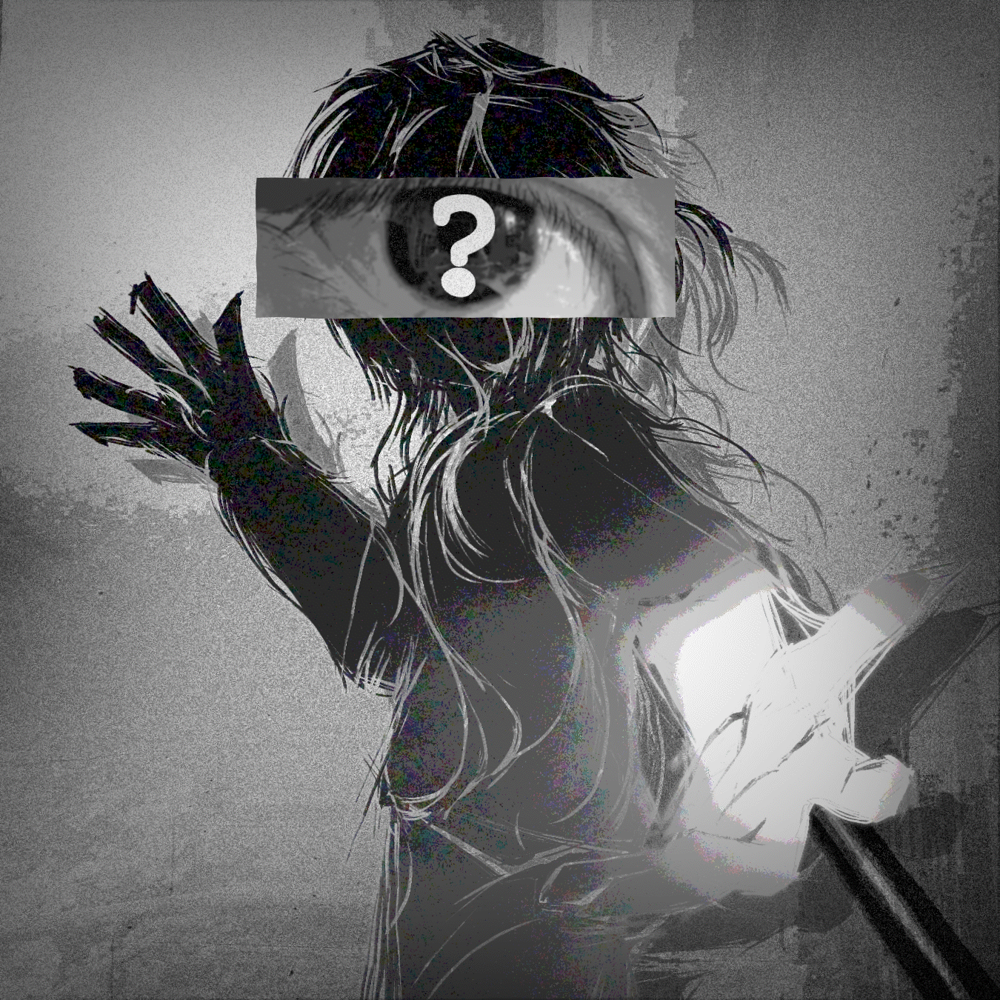

BASIC INFO
Threshold Consciousnesses: Lison
Dreamer Classification: (L1)1-94-1
Hazard Type: Antimemetic
Failure Types: Ejection
VERTICE CLUSTER

CONTAINMENT GUIDELINES
GUIDELINE I: All employees designated to conduct any kind of work on (L1)1-94-1 must have passed a psychological evaluation.
GUIDELINE II: Any and all documentation of (L1)1-94-1 must be done concurrently with active containment chamber visits.
GUIDELINE III: (L1)1-94-1 must be visited at least thrice a day to prevent form decay.